Друзья Ветров
-22-24 июля 2008 -
Из серии "Мемуары. Лето-2008"
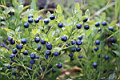
Сначала мы просто шли по тропе.
Потом на нас напала Большая Черника и заколдовала нас.
+
"Какие вы красивые!" -
сказала нам встречная бледнолицая тетенька
на незнакомом языке :)
Одинокое Перо и Веселая Пальма хотели сегодня уйти за Тающую
Гору, но на тропе их задержали Небесные Грибы. Грибы сказали, что их надо
собрать и насушить на зиму. Вообще-то, грибы ведь не разговаривают, так
что это не отмазка. За Тающую Гору они не ушли потому, что Веселая Пальма
недавно была в соседнем стойбище, там ей местные шаманы лечили спину и
кажется перестарались. А еще у молодой скво разболелась старая боевая
рана на голеностопе, так что и мышке-пАлёвке понятно, что вигвам надо
ставить на Чистом Озере. Одинокое Перо очень хотел посмотреть, что же
там, за Тающей Горой, но он любил маленькую скво и поэтому сказал ей:
"Ладно, потерпи еще немного. Идем до Чистого Озера. Хау!"
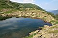
* 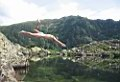
*
* 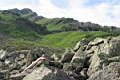
Чистое Озеро оказалось не только чистым, но еще и теплым
:)
Купание и отдых на берегу - отличная награда настоящим индейцам
за долгий и трудный путь под палящим горным солнцем.
У меня есть все, даже то, о чем не знаю.
А не знаю потому, что по земле шагаю.
Малое в Большом, Большое в Малом,
ничего не надо нам, у нас все есть,
все рядом...
Одинокое Перо собрал немного хвороста и развел костер. Веселая
Пальма сварила маисовую похлебку. "А здесь хорошее место, мне кажется
здесь живут добрые духи." - сказал Одинокое Перо. "Хочешь с
ними пообщаться?" - спросила Веселая Пальма, - "Мне тут шаманы
кое-что рассказали... Три штуки нам должно хватить, чтобы познакомиться
с духами. Больше не надо, а то и с Богом можно поговорить, а простым смертным
это не всегда хорошо". "Да, ты права." - согласился Одинокое
Перо, - "К тому же, нам еще надо успеть к ночи вигвам поставить..."
 ~
~
~
~ 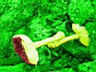
~
~
- Пойду камней принесу, площадку надо выровнять - Я тебе
помогу - Ветер-то какой сильный, аж шатает - Смотри, море в горах! - Точно!
Море! Круто! - Откуда оно взялось? Скорее его фотай! - А ветер-то все
сильнее, я лучше за камни подержусь, а то какой-то легкий стал. - А может
ветер это наш друг? Он такой веселый и сильный и свежий! Аааа, я хочу
полетать :) - А я хочу бубен! - Смотри, какие облака красивые, на сахарную
вату похожие! - Да, красивый закат... - Подкинь камень?! Я тебя сфотаю
- Сейчас... А, блин! я забыл, что он вниз упадет, чуть не зашиб сам себя
:) - Ой! Там Белая Снежинка, сказочная скво, лежит в хрустальном саркофаге!
- И правда похоже! Хотя вообще-то, это наш вигвам, просто он из полиэтиленовых
шкур сделан!
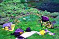
~
~
~
~ 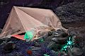
- Потанцевать хочется, а музыки нет! - Сейчас я тебе включу
музычку, потанцуем! - О!, клевая музычка! - ...э-хе-ахеа-хе-эхехехе-ахеа-хэ...
- Слушай, мы ведь уже полчаса лежим, музыку слушаем и не танцуем, пойдем
лучше вигвам доделывать! - Да-да, пойдем! Чего там надо? Еще камней принести?
Сейчас, уже несу. Ой, они такие тепленькие, такие хорошенькие, я их немного
побаюкаю:) - Блин, на небе что творится-то! - Вау! Я всё небо сразу вижу!
Ложись тоже на спину и глаза раскрой широко! - Вау! Точно всё видно! Сейчас
попробую сфотать! - Ой, как прикольно все в видоискателе смотрится, как
в кино! - Ты чего там делаешь? - Грибы укрываю, они спать захотели :)
- А мы где спать будем? вигвам-то еще не доделали! - Да, да, сейчас доделаем!
Вот только тебя сфотаю, а то ты такая забавная :) -
~ 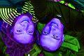
~ 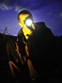
- Не, ветер точно наш друг. Мы когда вигвам шкурами прозрачными
закрывали, он ждал, когда мы все доделаем, а потом снова стал сильно дуть!
- А может это и есть местный дух? Или даже он здесь не один. Они тут бегают
и играют друг с другом, облака туда-сюда гоняют! - Облака какие-то сегодня
странные. - Дождь будет. - А вон там гроза идет. - Хорошо здесь наверху
сидеть, все видно. - А музычка у тебя вообще в тему, пойдем уже в вигвам
спать и музыку слушать... - Пойдем...
А-я, а-я, камень упал в серебрянный
пруд...
А-я, а-я, тают круги от того, что растут...
А-я, а-я, времени ход абсолютно не тот...
А-я, а-я, то время стоит, то время идет...
Под утро задул сильный ветер и пошел проливной дождь. Но
прозрачный вигвам стоял крепко, в нем было тепло, сухо и светло. Вчерашний
дух-ветер был веселый и безбашенный, он сказал Одинокому Перу и Веселой
Пальме, что жить надо легко и интересно, и смотреть на мир так, как будто
видишь его впервые. Дух-ветер, который всё утро испытавал вигвам на прочность,
говорил им, что все нужно делать основательно и никуда не надо спешить.
Они никуда и не спешили...
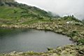
. 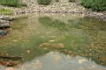
. 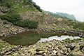
На дороге я встретил их, как мне показалось
не злых,
Голос их был подобен шепоту волн, также мил и пленительно тих.
"Иди-ка ты туда, принеси-ка нам то, что там,
а потому что, то что там, очень необходимо нам"...
Но я туда не дошел, потому что по дороге
На меня напали другие, злые, и отбрали ноги...
Осколки стеклянных слов, прорывая границы
миров,
Пишут буквами-звездами в небе ночном Вечности Первый Том
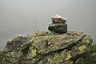
. 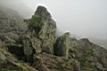
. 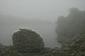
. 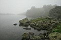
До сих пор я лежу без ног на дороге
в неведомом мире,
Изо рта вместо слов вылетает стекло в вязком воздухе делая дыры.
Надо мною проходят года, о моё спотыкаясь тело,
Я года протыкаю осколками слов, но им до меня нет дела.
Им до сроку нужно успеть вечность построить собой
А я продолжаю, от нечего делать, рвать воздух густой...
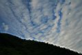
. 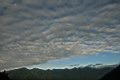
Осколки стеклянных слов, прорывая границы
миров,
Пишут буквами-звездами в небе ночном Ом Мане Падме Хом.
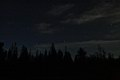
Фото: Лёха Слюдянский и Марина Леу (Июль 2008)
Сказка и спецэффекты : Лёха Слюдянский (Сентябрь 2008)
Стихи из песен группы "Адис Абеба"
|